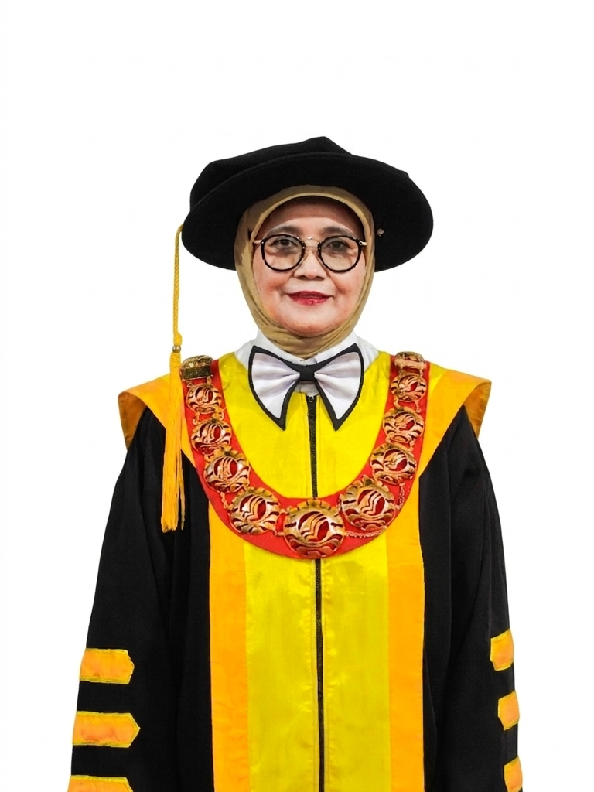
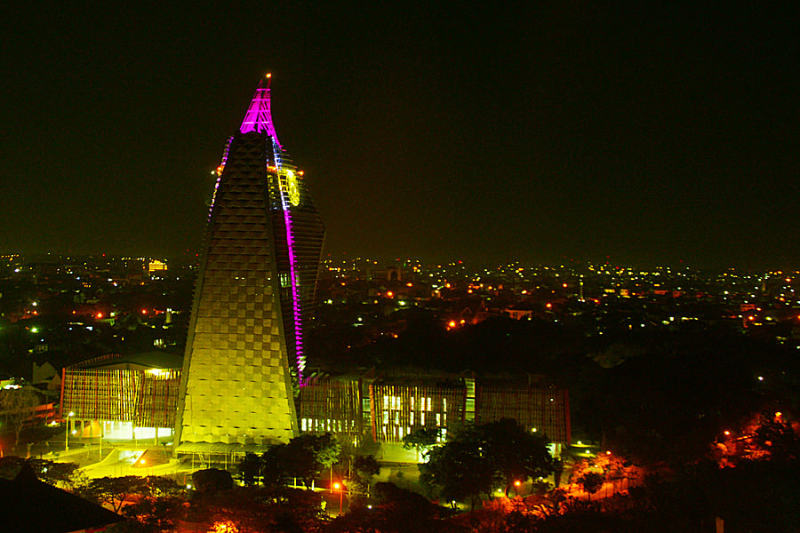
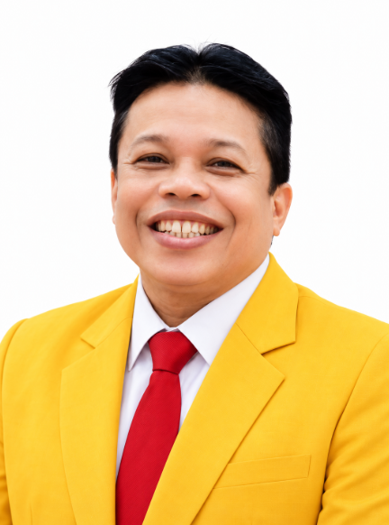
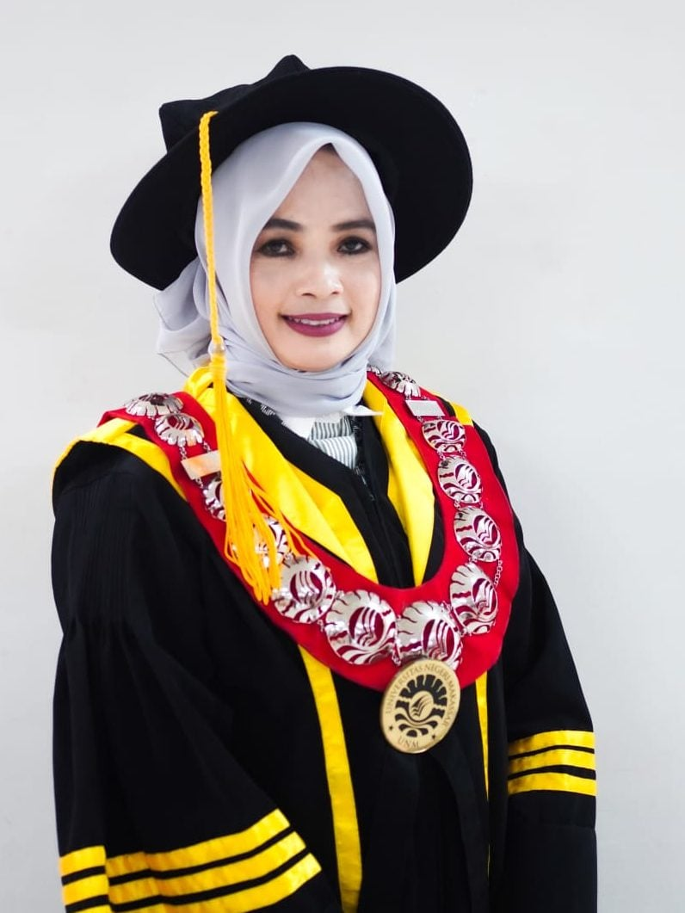
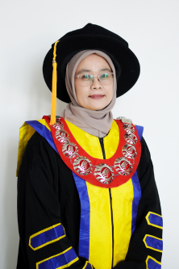

PUSAT KKN & PEMBERDAYAAN MASYARAKAT
Bersatu,
Bergerak,
Berdampak.
Ruang temu mahasiswa dan masyarakat. Kenali Pusat KKN-PM UNM dan ikuti perjalanan pengabdian dari kampus ke tengah masyarakat.
MENGENAL PIMPINANBersama menggerakkan pengabdian.PIMPINAN & PENGELOLA
Bersama untuk pengabdian.
Universitas Negeri Makassar
dan Pusat KKN-PM UNM.

Wakil Rektor Universitas Negeri Makassar

Wakil Rektor I
Prof. Dr. Andi Aslinda, M.Si.
Bidang Akademik

Wakil Rektor II
Prof. Hartati, S.Si., M.Si., Ph.D.
Bidang Umum dan Keuangan
Wakil Rektor III
Dr. Arifin Manggau, S.Pd., M.Pd.
Bidang Kemahasiswaan dan Alumni
Wakil Rektor IV
Prof. Dr. Syahruddin, M.Kes.
Bidang Perencanaan dan Kerja Sama
Rujukan pimpinan: UNM dan LP2M UNM. Foto Kepala LP2M: profil PERMI.
KKN UNM
Semester Ganjil
2026/2027
3.110Mahasiswa peserta KKN
8Kabupaten & kota
300Peserta KKN Tematik Literasi
Humas UNM4 Sep 2026
MENGENAL KAMI
Tahapan KKN.
Dari pendaftaran hingga penarikan.
Kenali alur pengabdianmu.
Pusat KKN-PM UNM mengoordinasikan pelaksanaan Kuliah Kerja Nyata sebagai bagian dari pengabdian kepada masyarakat. Berikut sembilan tahapan pelaksanaan KKN UNM.
Tentang Pusat KKN-PMPendaftaran daring
Daftar melalui kkn.unm.ac.id. Lengkapi formulir, biodata, dan dokumen persyaratan, lalu periksa kembali sebelum dikirim.
DaftarPenyerahan dokumen
Unduh dan lengkapi seluruh dokumen persyaratan. Serahkan kepada Pusat KKN UNM sesuai jadwal dan mekanisme yang ditentukan.
LengkapiPembekalan dan pelepasan
Ikuti pembekalan, gladi bersih, serta pelepasan bersama Dosen Pembimbing Lapangan. Hadir dengan tertib dan tepat waktu.
IkutiPengumuman dan pembagian lokasi
Periksa pengumuman kelompok, DPL, lokasi penempatan, serta jadwal keberangkatan melalui kanal informasi Pusat KKN UNM.
PeriksaPemberangkatan mahasiswa
Hadir di titik keberangkatan sesuai jadwal. Bawa identitas, dokumen, dan perlengkapan, lalu ikuti pembagian kendaraan serta arahan petugas.
HadirKedatangan di lokasi KKN
Ikuti penerimaan oleh pemerintah setempat, berkoordinasi dengan masyarakat, melapor kepada DPL, dan lakukan observasi awal.
KoordinasiPengisian LMS KKN UNM
Isi presensi harian dan laporan perkembangan melalui LMS KKN UNM. Lengkapi rencana program, pelaksanaan, dokumentasi, laporan, artikel pengabdian, serta laporan PLP 2 jika diperlukan.
LaporkanSupervisi KKN
Siapkan program kerja, bukti pelaksanaan, dokumentasi, dan laporan perkembangan. Ikuti supervisi serta tindak lanjuti hasil evaluasi.
SiapkanPenjemputan dan penarikan
Selesaikan program, laporan, dan administrasi. Berpamitan kepada pemerintah serta masyarakat, lalu ikuti penarikan resmi sesuai jadwal.
Selesaikan
Alur mengacu pada poster pelaksanaan KKN UNM. Jadwal dan ketentuan setiap tahapan mengikuti pengumuman Pusat KKN-PM UNM.
BERITA & KEGIATAN
Kabar pengabdian.
Catatan kegiatan dan kolaborasi
dalam perjalanan KKN UNM.
INFORMASI MAHASISWA
Pengumuman.
Informasi kegiatan dan pemberitahuan untuk peserta KKN.
CATAT TANGGALNYA
Agenda KKN.
| Sen | Sel | Rab | Kam | Jum | Sab | Min |
|---|
Ada agenda
DOKUMENTASI
Momen yang bercerita.
Arsip foto kegiatan KKN UNM.
Pilih foto untuk melihat lebih dekat.
Dokumentasi Humas UNM · Februari & September 2026
PUSAT KKN-PM UNM
Mari terhubung.
Temukan kami untuk informasi
dan koordinasi seputar kegiatan KKN.